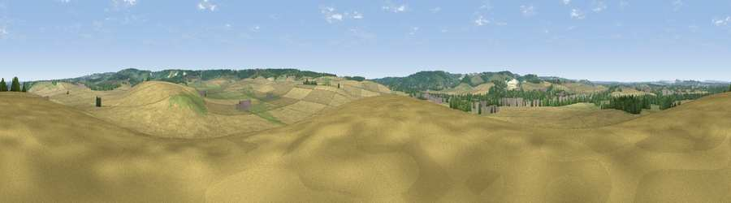

Viewpoint near South Stoke
#29836 in England · top 26% of its area beats it · near South StokeWhere it is
The exact computed spot (SU 60925 84225). Click the marker for map links.
The view, rendered

A 360° render of this exact spot computed from the terrain model, tree cover and land cover — summer colours, afternoon light, calibrated against photographs of famous viewpoints. Real trees, hedges and buildings will differ in detail.
The panorama
Grey silhouette: terrain skyline in each direction (720 bearings, Earth curvature and refraction included). Dashed green: skyline with trees (+15 m) and buildings (+8 m) as obstacles. Blue strip: how far the ground is visible on each bearing.
Where the view opens
Wedge length = distance to the farthest visible ground on that bearing (vegetation-aware). Rings at 10, 25 and 50 km.
What fills the view
66% cropland · 21% grassland · 12% woodland · 2% built-up
Angular shares of the visible panorama (visual magnitude), not map area. Landscape diversity 0.41 (0–1 Shannon).
Key numbers
More beautiful places nearby
The staircase of upgrades: each row has a higher view potential than everything closer. Driving times are estimates from straight-line distance, calibrated against real road routing — check an actual route before setting out.
| Place | Direction | Drive | Score |
|---|---|---|---|
| Viewpoint near Moulsford | WSW · 3 km | ~8 min | 58.8 |
| Viewpoint near Compton | WSW · 7 km | ~15 min | 64.1 |
| Castle Hill | NNW · 9 km | ~18 min | 68.3 |
| Round Hill | NNW · 9 km | ~19 min | 70.1 |
| Viewpoint near Watlington | NE · 13 km | ~24 min | 70.6 |
| Viewpoint near Lewknor | NE · 15 km | ~27 min | 70.8 |
| Viewpoint near Lewknor | NE · 17 km | ~30 min | 74.4 |
| Beacon Hill | SSW · 31 km | ~48 min | 76.7 |
51.55363, -1.12266 · source: screening · position refined by local search. Computed location — check access rights before visiting.